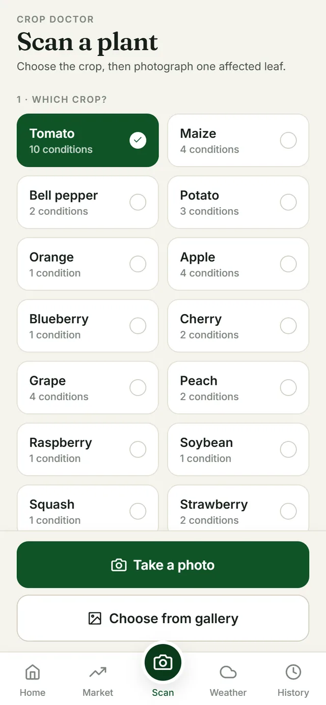
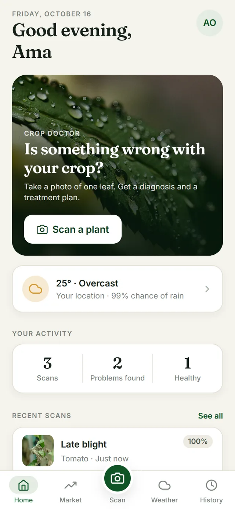
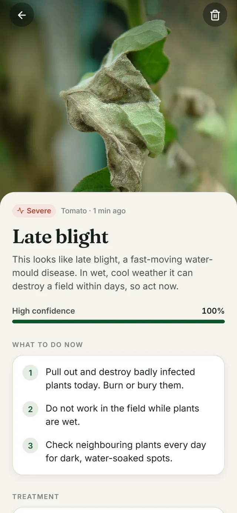
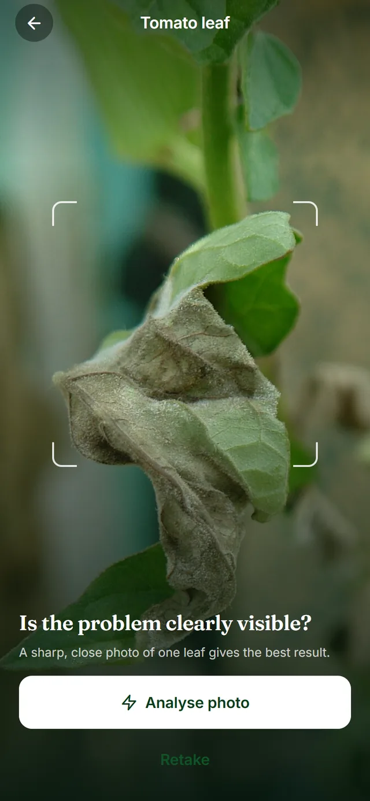
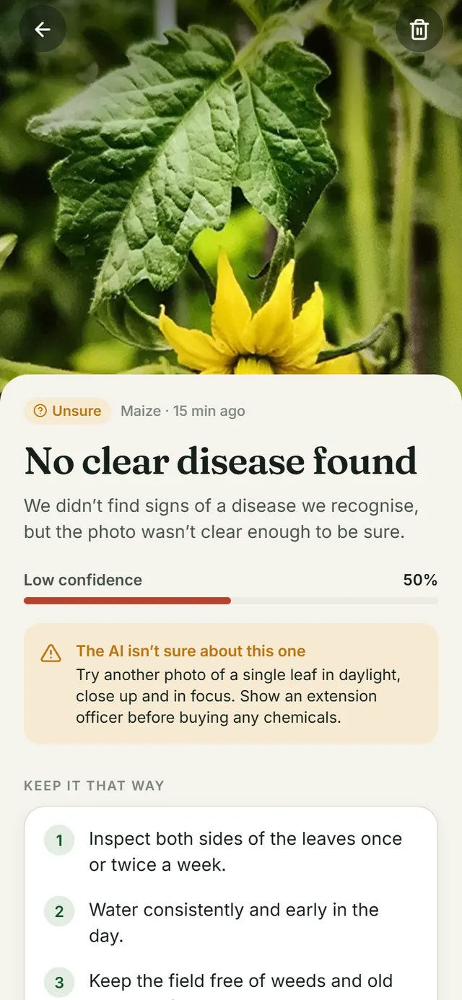
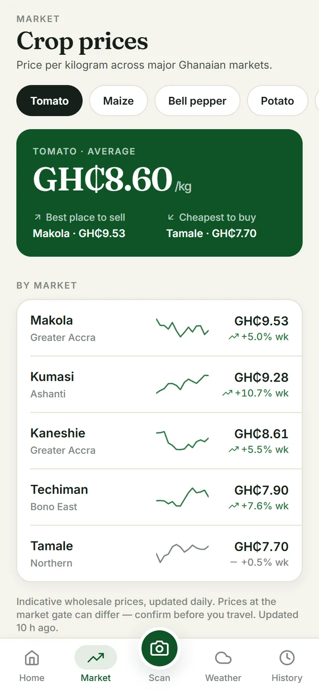
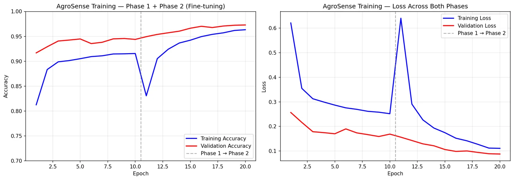

01
Choose the crop
Pick what you’re growing so AgroSense only considers diseases that affect it — fewer wrong answers.
Photograph one sick leaf. AgroSense names the disease, tells you exactly what to do — organic options first — and helps you plan the week around the weather and the market.
Free for farmers. Works on slow mobile data, and by SMS on any phone.


A blight caught on Monday can be contained. Caught on Friday, it can take the field. Farmers in Ghana rarely have an expert within reach when it matters.
of harvests lost each year to pests and disease, much of it preventable with early action.
extension officers to farmers. Expert advice is a long trip away — if it comes at all.
smallholder farms in Ghana, and around 33 million across West Africa, facing the same gap.
Figures as cited in the AgroSense project brief; regional estimates vary by crop and season.

Pick what you’re growing so AgroSense only considers diseases that affect it — fewer wrong answers.

In daylight, filling the frame. The photo is compressed on the phone, so it sends quickly even on 3G.
The disease, how serious it is, what to do today, organic and chemical treatments available in Ghana, and how to prevent it next season.
A MobileNetV2 model trained on 54,000 leaf images identifies the disease. Advice is written for Ghanaian conditions: products sold by local agro-dealers, organic methods first, and a firm “see an extension officer” whenever the model isn’t sure.
A 7-day forecast for your farm, turned into advice for your crop: when to plant, when not to spray, when to clear drainage.
Prices per kilogram at Kumasi, Techiman, Makola, Tamale and Kaneshie, the week’s trend, and the best place to sell.
The same diagnosis, price and weather services work over SMS — send a photo by MMS, or text “price tomato”.
High-contrast design that reads in direct sun. Small uploads for metered data. Phone-number sign-in — no email needed. Your history is saved, so you can show the result to an officer later.


Wrong advice costs a farmer money they don’t have. So AgroSense is designed to be honest before it is impressive.
A 2.7 MB TensorFlow Lite model, fine-tuned in two phases from MobileNetV2, sits at the centre of a pipeline built to keep working when networks and services don’t.

We’re looking for partners to pilot AgroSense with farmers across Ghana’s growing regions.
The model reached 97.3% accuracy on a held-out validation set of leaf photos. Field photos are harder than lab images, so every result shows its confidence, and AgroSense tells you to retake the photo or ask an extension officer when it isn’t sure.
Tomato, maize, bell pepper, potato and orange are most relevant for Ghana, along with apple, grape, peach, cherry, squash, strawberry, soybean, blueberry and raspberry. Cassava, cocoa, yam and plantain are on the roadmap.
No. AgroSense is free for farmers. Standard data or SMS charges from your network may apply.
No. Prices, weather and help work by SMS on any phone. Photo diagnosis by SMS needs a phone that can send picture messages.
During the beta, prices are indicative daily wholesale estimates for five major markets. We are working with partners to bring in live surveyed prices. Always confirm at the market before you travel.
No. It helps you act fast between visits and shows the officer exactly what you saw. Officers can review and correct diagnoses, which also improves the model.
Photos are stored with location data removed and are only linked to your account. You can delete any scan, or your whole account, from the app at any time. Read the privacy policy.
The Android beta is open to farmers, cooperatives and extension officers in Ghana. iOS is coming next.